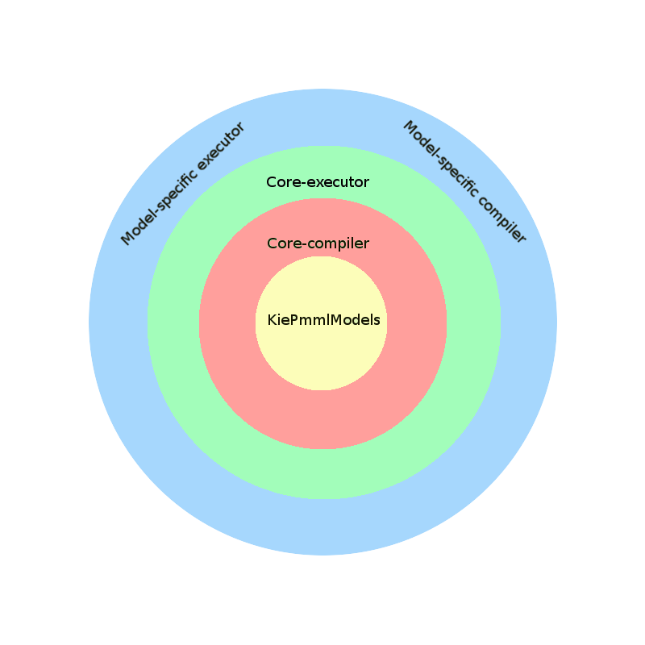

PMML revisited
Hi folks! The beginning of this year brings with it the initiative to re-design the Drools PMML module.
In this post I will describe how we are going to approach it, what’s the current status, ideas for future development, etc. etc so… stay tuned!
Background
PMML is a standard whose aim is to "provide a way for analytic applications to describe and exchange predictive models produced by data mining and machine learning algorithms." PMML standard defines a series of models that are managed, and we will refer to them as "Model".
The maybe-not so obvious consequence of this is that, said differently, PMML may be thought as an orchestrator of different predictive models, each of which with different requirements.
Drools has its own PMML implementation. The original design of it was 100% drools-engine based, but in the long term this proved to be not so satisfactory for all the models, so a decision has taken to implement a new version with a different approach. And here the current story begin…
Requirements
To the bare-bone essence, what a PMML implementation should allow is to:
- load a PMML file (xml format)
- submit input data to it
- returns predicted values
Approach
The proposed architecture aims at fulfilling the requirements in a modular way, following “Clean Architecture” principles.
To achieve that, components are defined with clear boundaries and visibility.
General idea is that there are specific tasks strictly related to the core functionality that should be kept agnostic by other “outer” features.
Whoever wanting to deep delve in the matter may read the book "Clean Architecture" by R. C. Martin, but in the essence it is just a matter to apply good-ol’ design principles to the overall architecture.
With this target clearly defined, the steps required to achieve it are:
- identify the core-logic and the implementation details (model-specific)
- implement the core-logic inside “independent” modules
- write code for the model-specific modules
We choose to implement a plugin pattern to bind the core-logic to the model-specific implementations mostly for two reasons:
- incremental development and overall code-management: the core module itself does not depend on any of the model-specific implementations, so the latter may be provided/updated/replaced incrementally without any impact on the core
- possibility to replace the provided implementation with a custom one
- we also foresee the possibility to choose an implementation at runtime, depending on the original PMML structure (e.g. it may make sense to use a different implementation depending on the size of the given PMML)
Models
KiePMMLModel
- This is the definition of Kie-representation of the original PMML model.
- For every actual model there is a specific implementation, and it may be any kind of object (java map, drools rule, etc).
Components
We identified the following main functional components:
- Compiler
- Assembler
- Executor
Compiler
This component read the original PMML file and traslate it to our internal format.
The core-side of it simply unmarshall the xml data into Java object. Then, it uses java SPI to retrieve the model-compiler specific for the given PMML model (if it does not find one, the PMML is simply ignored).
Last, the retrieved model-compiler will “translate” the original PMML model to our model-specific representation (KiePMMLModels).
The core-side part of this component has no direct dependence on any specific Model Compiler implementation and not even with anything drools/kie related – so basically it is a lightweight/standalone library.
This component may be invoked at runtime (i.e. during the execution of the customer project), if its execution is not time-consuming, or during the compilation of the kjar (e.g. for drools-implemented models).
Assembler
This component stores KiePMMLModels created by the Compiler inside KIE knowledge base. None of the other components should have any dependency/knowledge of this one.
In turns, it must not have any dependency/knowledge/reference on actual Model Compiler implementations.
Executor
This component is responsible for actual execution of PMML models. It receives the PMML input data, retrieves the KiePMMLModel specific for the input data and calculates the output.
For each model there will be a specific “executor”, to allow different kinds of execution implementation (drools, external library, etc) depending on the model type.
The core-side of it simply receives the input data and retrieve the model-executor specific for the given PMML model (if it does not find one, the PMML is simply ignored).
Last, the retrieved model-executor will evaluate the prediction based on the input data.
The core-side part of this component has no direct dependence on any specific Model Executor implementation, but of course is strictly dependent on the drool runtime.
 |
| Overall Architecture |
Model implementations
Drools-based models
- the compiler is invoked at kjar generation (or during runtime for hot-loading of PMML file)
- the compiler reads the PMML file and transform it to “descr” object (see BaseDescr, DescrFactory, DescrBuilderTest)
- regardless of how the model-compiler is invoked, the drools compiler must be invoked soon after it to have java-class generated based on the descr object
- the assembler put the generated classes in the kie base
- the executor loads the “drools-model” generated and invoke it with the input parameters
DRL details
- for each field in the DataDictionary, a specific DataType has to be defined
- for each branch/leaf of the tree, a full-path rule has to be generated (i.e. a rule with the path to get to it – e.g. “sunny”, “sunny_temperature”, “sunny_temperature_humidity”)
- a “status-holder” object is created and contains the value of the rule fired – changing that value will fire the children branch/leaf rules matching it (e.g. the rule “sunny” will fire “sunny_temperature” that – in turns – will fire “sunny_temperature_humidity”)
- such “status-holder” may contain informations/partial result of evaluation, to be eventually used where combination of results is needed
- missing value strategy may be implemented inside the status holder or as exploded rules
Testing
Regression
Regression model is the first one to have been implemented. Due to its inherent simplicity, we choose to provide a pure java-based implementation for it. For the moment being it is still under PR, and new full tests are being added.
Tree
After evaluating all the pros/cons, we decided that this model could be a good candidate to be implemented with a drools-based approach. Being also a simple model to follow, we choose to use it as first test for drools approach.
TO-DOs
This is a list of missing features that are not implemented, yet, and not strictly-related to a specific model. It will be (well, it should be) updated during the development:
- Setup Benchmarking skeleton project (see Drools Benchmark)
- Manage Extension tags (see xsdElement_Extension)
- Manage SimpleSetPredicate tags (see SimpleSetPredicate)
- Implement VariableWeight inside Segment (dynamic alternative to static “weight” value)